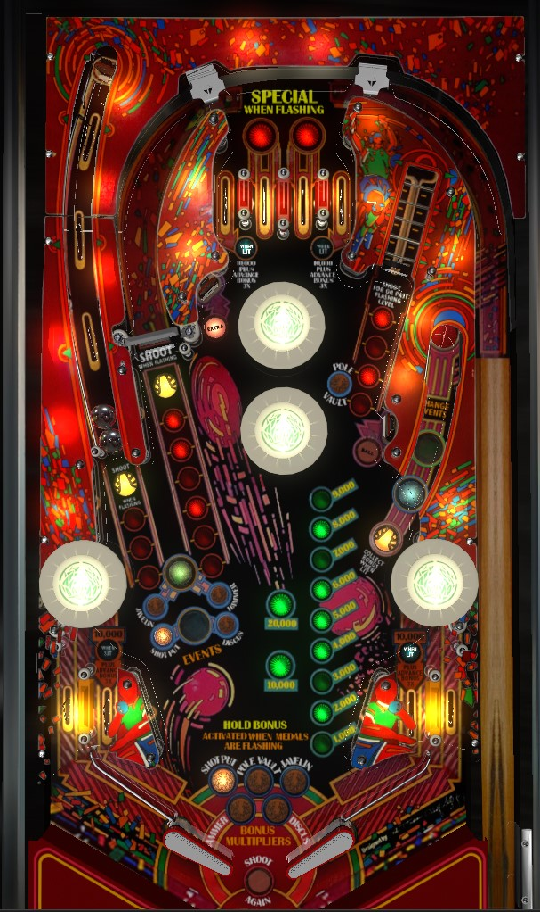

If the right flipper is strong and the spinner spins well, you can get very strong scores on The Games by just shooting for the spinner and ignoring the rest of the game. Making game progress requires full shots to the captive ball, spinner, and vary target; the vary target requires 4 total shots, while the captive ball and spinner just need 1 strong shot each. Two different gold medals can be scored at the captive ball and spinner; after collecting 1, shoot the right saucer to light the other. Gold medals are bonus multipliers; at 20,000 base bonus, the right saucer also collects bonus. Hold Bonus is qualified by getting all 5 Gold Medals, which means the right saucer collect won't reset anything, making it a repeatable 120,000+ point shot until end of ball.
All four top lanes score 5,000 points and a bonus advance when not lit. The leftmost and rightmost top lanes score 10,000 points and 3 bonus advances when lit; they are lit at the start of the game. Rolling through one of these lanes when lit will unlight it and light the in lane on the same side of the table; going through a lit in lane unlights it, and relights the corresponding left or right top lane. The two center top lanes are lit alternately for Special after the Pole Vault gold medal has been earned from the vary target.
The main in-game goal is to earn Gold Medals in the Olympic events of javelin, shot put, hammer, discus, and pole vault.
Javelin and Shot Put: left captive ball. There are 3 rollover switches in the captive ball lane. From weakest hit to strongest, they score 10,000 points, 20,000 points, 30,000 points, or 50,000 points plus a Gold Medal. The captive ball can only be lit for Javelin or Shot Put at a single time; once one is collected, you need to shoot the right saucer to switch to the other event in order to make the second Gold Medal available.
Hammer and Discus: left spinner. The goal with the spinner is to hit it as hard as you can with a single shot. The spinner value is 1,000 points plus an additional 1,000 for each lit red insert in front of the spinner. One additional red insert lights every 2 spins. If the game believes at any time that the spinner has stopped, all red lights unlight. After 14 consecutive spins- with the last two being worth 7,000 points each- all red lights unlight, and the Gold Medal is awarded if the indicated event has not been won yet. If the spinner keeps going after 14 spins, the value will start to build again. The game has a very quick trigger regarding when it believes the spinner has stopped: sometimes your progress will be reset just be the spinner slowing down slightly or not registering on one occasion. This makes the spinner somewhat finicky to go for on occasion, but on a refurbished, well-maintained machine, the Gold Medals shouldn't be too hard to earn and a single strong spinner shot should score between 70,000 and 100,000 points. Just like with the Javelin and Shot Put, only one of the two events can be highlighted at a time, so once you collect the Hammer or Discus Gold Medal, you need to shoot the right saucer once to switch to the other event.
Pole Vault: vary target. Partial shots to the vary target score 10,000 points, and full shots score 20,000. It takes 4 total shots to the vary target to earn the Pole Vault Gold Medal. Full shots always count as one of the 4 you need; partial shots sometimes count, but not always, and I'm not certain why. Regardless, this is the hardest Gold Medal to get, and if you do collect it, one of the two center top lanes will start flashing for Special, alternating any time a 10-point switch hit is scored.
Gold Medals count as multipliers for the end of ball bonus. Collecting any two Gold Medals lights the extra ball targets. Collecting all 5 Gold Medals makes them flash, which indicates that Hold Bonus is available.
There are 2 standup targets: one near the bumpers labelled Extra, and one between the right saucer and the vary target labelled Ball. These targets score 2,000 points and a bonus advance when hit. After collecting any 2 Gold Medals, both targets will be lit. Hit a target once to make it flash; hit it again to unlight it completely. Unlight both standup targets in this way to score an extra ball.
The saucer scores 10,000 points and alternates whether the currently-in-progress events are the green events (Javelin at captive ball, Hammer at spinner) or the blue events (Shot Put at captive ball, Discus at spinner). If the base bonus is currently at least 20,000 points, this saucer also collects the bonus, including whatever multiplier has been earned by collecting Gold Medals. Collecting the bonus at this saucer resets the base bonus, but keeps any multipliers intact. However, if all 5 Gold Medals are collected and the bonus has been maxed at 6x, Hold Bonus is in play, and the saucer will not reset the base bonus. This means that once all 5 Gold Medals are earned and the base bonus is at least 20,000, the right saucer will always be lit for the rest of the ball for a repeatable collect worth up to 174,000 points. If you make it this far on a single ball of The Games, the right saucer becomes the only thing that matters until the ball drains.
The Games has a conventional in/out lane setup. Out lanes score 10,000 points. In lanes score 5,000 points and a bonus advance when not lit, or 10,000 points and 3 advances when lit; collecting a lit outer top lane unlights it and lights the in lane on the same side, and collecting a lit in lane unlights it and relights the same side's top lane.
Slingshots score 10 points and are passive; the ball just bounces off them harmlessly rather than being actively flung away by a kicker, as on most games. Note the pop bumpers above the out lanes; these can spike balls directly into in/out lanes, or they can put the ball out of control, or they can save you by flinging a ball near the edges of the table back toward the center.
Base bonus is advanced 1 time by unlit top lanes, unlit in lanes, and Extra Ball targets. Bonus is advanced 3 times by lit left or right top lanes and lit in lanes. Max base bonus is 29,000 points.
Bonus multiplier is increased by 1 for each Gold Medal collected, up to a maximum of 6x bonus for 5 collected medals.
Bonus can be collected mid-ball at the right saucer if the base bonus is at least 29,000.
At 6x bonus, Hold Bonus is qualified, which means that the right saucer collect or a drained ball will not reset the base bonus; in any other case, the base bonus would be reset to 1,000 points. All Gold Medals, and therefore all bonus multipliers as well as the Hold Bonus feature, are erased at the end of a ball.
In competiton/novelty play, extra balls and specials both score 50,000 points.